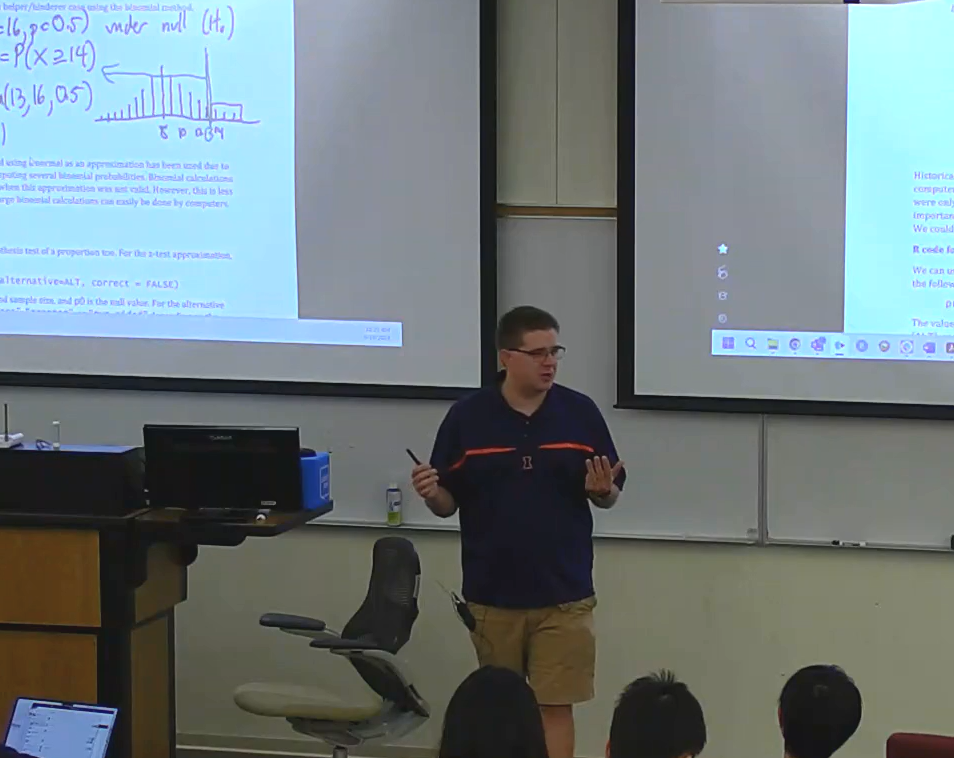
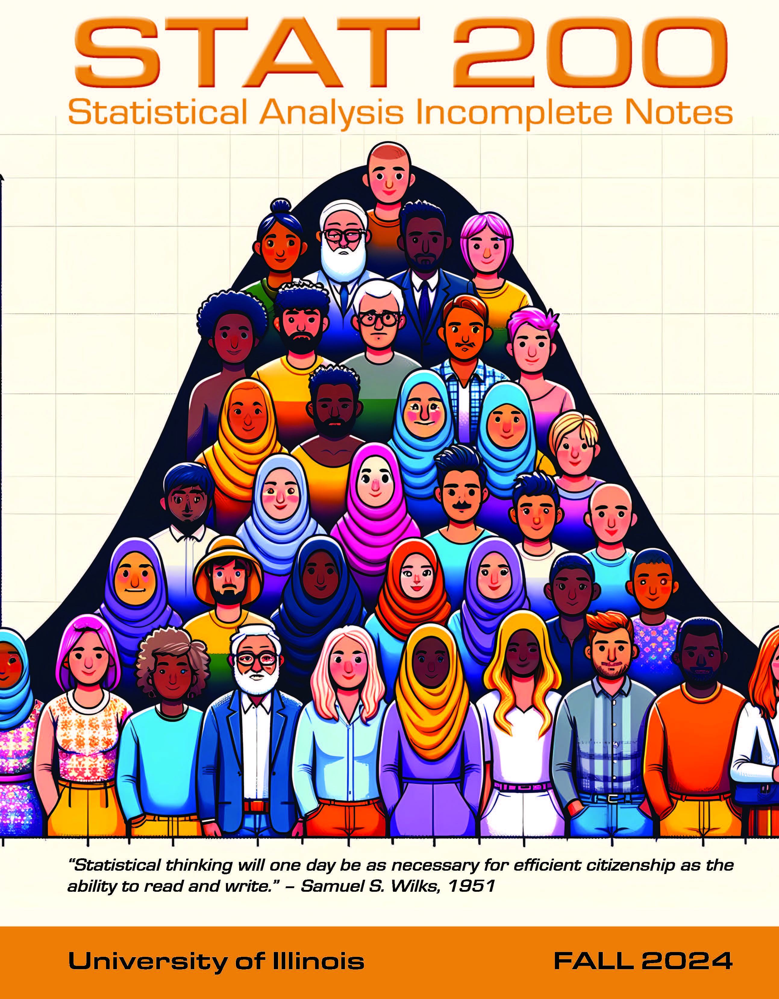

Teaching
University of Illinois Urbana-Champaign
- Stat 100 - Statistics
- Fall 2023 - Spring 2024, 2 sections
- Stat 200 - Statistical Analysis
- Fall 2023 - Present, 5 sections
- Statistics for Illinois Scholars Program
Portland State University
- Stat 241 - Application of Statistics for Business
- Stat 243 - Introduction to Probability and Statistics I
- Winter 2017 - Winter 2021, 13 sections
- Stat 244 - Introduction to Probability and Statistics II
- Spring 2016 - Spring 2021, 6 sections
- Stat 451 - Applied Statistics for Engineers and Scientists I
- Fall 2017 - Spring 2019, 5 sections
- Stat 452 - Applied Statistics for Engineers and Scientists II
- Winter 2019 - Spring 2019, 2 sections
University of Michigan
- Stat 250 - Introduction to Statistics and Data Analysis
- Fall 2013 - Winter 2015, 4 lab sections
- Head Graduate Student Instructor, Fall 2014 - Winter 2015

Stat 200
Stat 200 is a course centered around active learning. Students complete activities in class that use TinkerPlots to explore new statistical concepts through building probability models and simulating results with them. They then watch lecture videos outside of class as homework to help solidify these ideas that they explored. Students finally return to class to complete their "homework" assignment, which is centered around statistical reasoning and carrying out statistical analyses in RStudio.
The resources provided here give a preview to the content used in this course, but it is not the complete set of material for the course. If you are a statistics instructor and wish to obtain more materials, such as the assessments, videos, or teacher annotations, please email me and I'd be happy to share! For the materials shared publicly here, you are free to adapt anything you see here, but please do not re-upload or publicly share these in their original form.
TinkerPlots Activities
The activities designed here are adapted from the curriculum I developed with Jennifer Noll on her
CAREER grant as part of a course I taught at Portland State. Many of these activities and data sets have come from the CATALST curriculum and the Rossman and Chance applet collection.
Textbook Materials